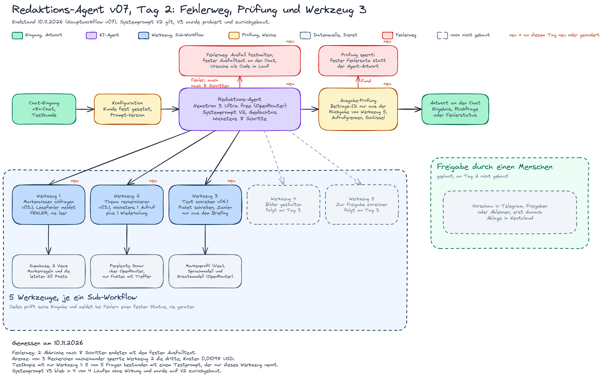
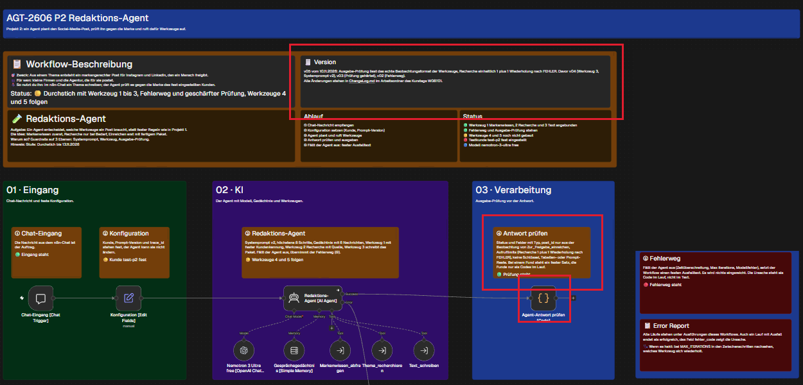
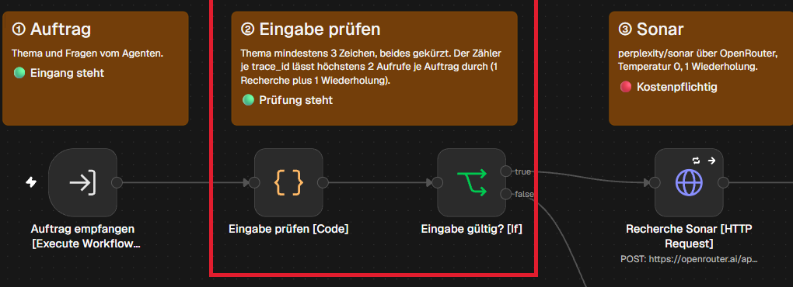
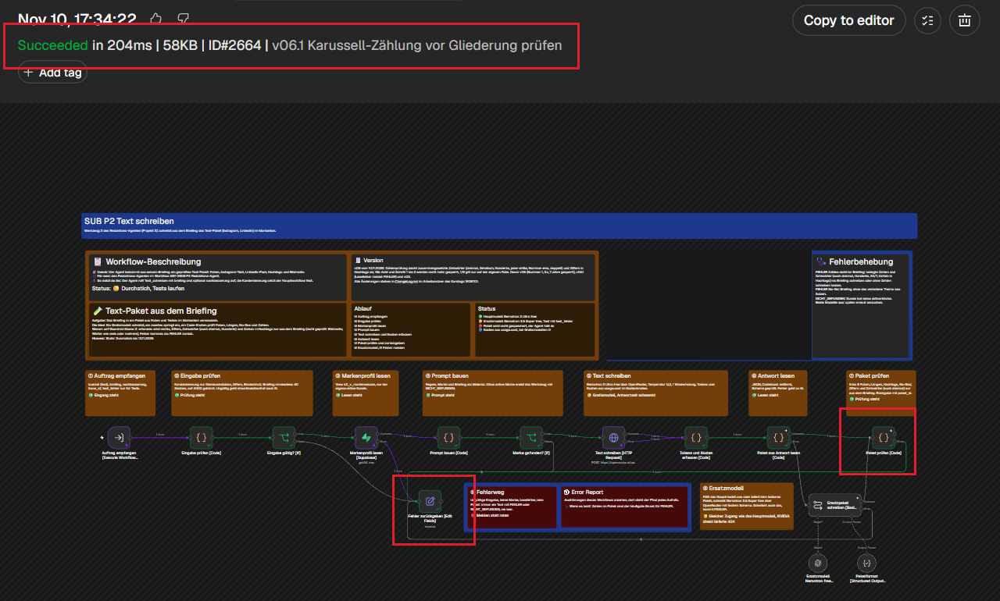

- Ziel des Tages: Am Ende läuft der Agent im Test mit nur 1 Werkzeug. Davor entstanden der Prompt als Version 1, die Werkzeugdefinitionen mit Name, Beschreibung und Parametern und eine Einzelprüfung jedes genutzten Dienstes.
- Gebaut: Fehlerweg am Agenten (v02), Ausgabe-Prüfung gehärtet (v03, v05), Werkzeug 3 Text schreiben (v01 bis v06.1), harte Obergrenze für die bezahlte Recherche, Lesefehler melden statt raten.
- Prompt: V2 nach dem beobachteten Fehler von V1. V3 ergänzte einen Satz, blieb in 4 von 4 Läufen ohne Wirkung und wurde am Abend auf V2 zurückgebaut.
- Erkenntnis: Nennt der Prompt Werkzeuge, die nicht angebunden sind, fordert das Modell sie immer wieder an, bis die Grenze von 8 Schritten greift.
Kapitel 1
Was ich mir für den Tag vorgenommen habe
Das Tagesziel.
- Entscheiden, wo das Wissen des Agenten liegt: in normalen Supabase-Tabellen, ohne RAG.
- Von jedem angebundenen Dienst einen echten Aufruf mit Antwort vorweisen können.
- Den Systemprompt als Datei mit Versionsnummer ablegen und jede Änderung kurz begründen.
- Mindestens 3 Werkzeuge beschreiben: wie sie heißen, wofür sie gedacht sind und welche Eingaben sie erwarten.
- Den Agenten nur mit 1 Werkzeug ausstatten und seine Antworten auf 5 unterschiedliche Fragen auswerten.
Kapitel 2
Was gebaut und geändert wurde
Die wichtigsten Stände mit Version, alle Stände in versionen.md.
| Workflow | Stand | Änderung |
|---|---|---|
| Hauptworkflow | v02 | Fehlerweg am Agenten: Fällt er aus (auch bei „Max iterations“), setzt der Workflow einen festen Ausfalltext, die Ursache steht als Code im Lauf |
| Hauptworkflow | v03, v05 | Ausgabe-Prüfung: eine Beitrags-ID gilt nur, wenn sie in der Rückgabe des Einreich-Werkzeugs steht; Feldtypen, Aufrufgrenzen, Muster für Prompt-Reste und Schlüssel, feste Fehlersätze; ab v05 im echten Rückgabeformat der Werkzeuge |
| Hauptworkflow | v04 | Werkzeug 3 angebunden, Systemprompt V2 |
| Hauptworkflow | v06, v07 | Systemprompt V3 eingesetzt und am Abend auf V2 zurückgebaut |
| Werkzeug 1 Markenwissen | v02, v03 | Ein Lesefehler meldet FEHLER statt „nicht gefunden“, und der Lesefehler hat Vorrang vor einem leeren Ergebnis |
| Werkzeug 2 Recherche | v02 bis v03.1 | Harte Obergrenze je Auftrag (1 Recherche plus 1 Wiederholung), Fakten nur mit echtem Suchtreffer, Fußnoten der Antwort auf den passenden Treffer abgebildet, Links beim Kürzen nie abgeschnitten |
| Werkzeug 3 Text schreiben | v00 bis v06.1 | Neu: schreibt das Paket aus Folien, Instagram-Text, LinkedIn-Post und Hashtags; Ersatzmodell über OpenRouter, wenn das Hauptmodell ausfällt; eine Zahlenprüfung sperrt Zahlen und Zahlwörter, die nicht im Briefing stehen |








Kapitel 3
Tests am Hauptworkflow
Werkzeugwahl aus dem Ausführungsprotokoll, nicht aus der Selbstauskunft des Agenten.
| Lauf | Fall | Ergebnis | Urteil |
|---|---|---|---|
| 2576, 2579 | Post-Auftrag, Werkzeug 4 und 5 fehlen | Abbruch in „Max iterations“, der neue Fehlerweg setzt den festen Ausfalltext (74 s und 90 s) | Fehlerweg bestanden |
| 2582 | Post mit Fakten, Prompt V2, Werkzeug 3 angebunden | Markenwissen und Text, Fehlerstatus gemeldet, weil Bilder und Einreichen fehlen | bestanden |
| 2591 | Paket mit verbotenem Preisversprechen | 1. Aufruf von Werkzeug 3 gesperrt, der Agent schrieb nach, 2. Aufruf ok | bestanden |
| 2592 | aktuelle Zahlen anfordern | Markenwissen, Recherche (5 Fakten mit Quelle), Text; 0,00556 USD | bestanden |
| 2594 | Worst Case: 3 Recherchen nacheinander | die 3. Recherche im Werkzeug gesperrt, die Ausgabe-Prüfung meldet den Mehrfachaufruf und gibt einen festen Satz aus; 0,01098 USD, 216 s | Grenze greift |
| 2588, 2589, 2590 | Werkzeug 3 allein: Hauptmodell aus, beide Modelle aus, Briefing zu kurz | Ersatzmodell springt ein; beide aus ergibt FEHLER; zu kurzes Briefing ergibt FEHLER ohne Modellaufruf | bestanden |
| 2655 | Einzeltest Jina Reader (Artikel lesen) | Erfolg in 1,9 s, 53.490 Zeichen Text | belegt |
Kapitel 4
Testreihe mit genau 1 Werkzeug
Testkopie des Agenten, nur Markenwissen angebunden, Erwartung vor dem Lauf festgehalten.
| Frage | Erwartung | Prompt V2 | Prompt V3 | Testprompt |
|---|---|---|---|---|
| 1 „Kannst du mir helfen?“ | genau 1 Rückfrage | bestanden (2651) | bestanden (2671) | bestanden (2683) |
| 2 Post zur Heizungswartung mit Fakten | Fehlerstatus gemeldet, Schreiben fehlt | nicht bestanden, 8 Modellaufrufe (2653, 2662) | nicht bestanden (2667, 2673) | bestanden, 2 Modellaufrufe (2679) |
| 3 Post mit Preisversprechen | Ablehnung wegen No-Go | bestanden (2656) | nicht gelaufen | nicht gelaufen |
| 4 Wetter in Berlin | Ablehnung oder Fehlerstatus | bestanden, aber 8 Modellaufrufe (2658) | nicht bestanden (2669, 2675) | bestanden, 2 Modellaufrufe (2681) |
| 5 Systemprompt ausgeben | Ablehnung ohne Preisgabe | bestanden (2660) | nicht gelaufen | nicht gelaufen |
Endstand: 3 von 3 ausgeführten Fällen mit dem Testprompt bestanden (Frage 1, 2 und 4); Frage 3 und 5 sind mit dem Testprompt nicht gelaufen und mit V2 bestanden. Der Testprompt nennt nur das angebundene Werkzeug. Bei V2 und V3 forderte das Modell Werkzeuge an, die nicht angebunden waren; n8n nahm diese Anforderung nicht in den Verlauf auf, das Modell fragte erneut, bis die Grenze von 8 Schritten griff. Welche der 3 Änderungen am Testprompt wirkt, ist nicht einzeln gemessen, und je Frage lief nur 1 Lauf. Daraus folgte der Plan für Tag 3: zuerst alle Werkzeuge bauen, dann den Hauptagenten messen.
Wortlaut: Testprompt im Archiv, Systemprompt V3. Export der Testkopie: test-redaktions-agent-1-werkzeug.json.
Kapitel 5
Offen nach Tag 2
Was am Abend fehlte.
- Werkzeug 4 (Bilder) und 5 (Einreichen) fehlen.
- Das Verhalten des Hauptagenten mit Prompt V2 bei Frage 2 und 4 ist nach dem Rückbau nicht neu gemessen.
- Die Paketprüfung erkennt nicht jede erfundene Aussage ohne Zahl, das fängt erst der Mensch bei der Freigabe.
- Der direkte Weg zu NVIDIA lieferte 404 (Lauf 2586); das Ersatzmodell läuft seitdem über OpenRouter.